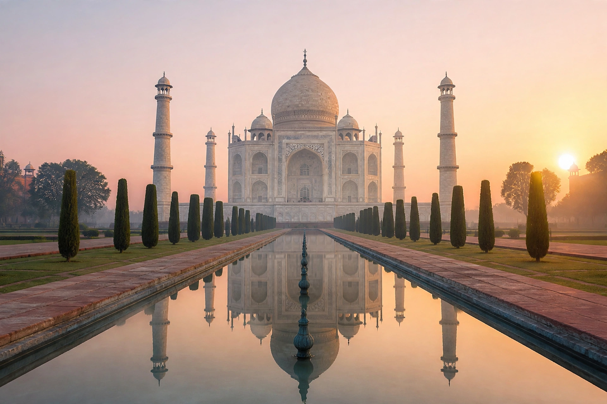

Mughal architecture is the style of architecture developed by the Mughal Empire in the Indian subcontinent between the 16th and 18th centuries. It is a distinctive blend of Islamic, Persian, Turkish, and Indian traditions, characterized by large bulbous domes, slender minarets, massive halls, delicate ornamentation, pietra dura inlay, and symmetrical charbagh gardens.
The style emerged under Babur and Humayun, whose tomb in Delhi (c. 1570) — the first garden-tomb in India — set the template. Under Akbar, red sandstone buildings such as the Agra Fort and the city of Fatehpur Sikri fused Persian forms with Hindu and Jain craft traditions. Jahangir's reign added refinement and garden design, and under Shah Jahan the style reached its zenith in white marble: the Taj Mahal at Agra (1632–1653), the Red Fort and Jama Masjid in Delhi, and the Shalimar Gardens of Lahore. Aurangzeb's more austere patronage produced the Badshahi Mosque in Lahore, the largest Mughal mosque.
Hallmarks include the onion dome on an elongated drum, the pishtaq (projecting portal), chhatri pavilions, jali (pierced stone screens), calligraphy as ornament, and the charbagh — a four-part paradise garden divided by water channels. Mughal building influenced later Indian architecture profoundly, from Rajput palaces to the Indo-Saracenic style of the British Raj, and its monuments, including the Selimiye's contemporary Taj Mahal, rank among the most visited in the world.